Welcome to Matheran Agro-TourismAgriculture is the backbone of Indian Economy. Around 85 percent of the population is directly or indirectly dependent on Agriculture and almost 26 percent of India’s GDP comes from Agriculture. 90 million farmers are dwelling in 6.25 lac villages producing more than 200 MT of food grains feeding the country. More than a profession or a business, agriculture is India’s culture. Hence, adding additional income generating activities to existing agriculture would certainly increase contribution of agriculture in the national GDP. Serious efforts need to be made in this direction and Agri – Tourism is one such activity. Tourism is termed as an instrument for employment generation, poverty alleviation and sustainable human development. During 1999-2000, direct employment created by tourism was 15.5 million. Besides, tourism also promotes national integration, international understanding and supports local handicrafts and cultural activities. During 2000, the number of foreign tourists that visited India was 26.41 lac. India’s share in world tour market is just 0.38 percent. With this meager share, foreign exchange earned is Rs.14,475 crores. Turnover in domestic tourism is much more than this. To promote domestic tourism, thrust areas identified by Government of India are development of infrastructure, product development and diversification, development of eco-adventure sports, cultural presentations, providing inexpensive accommodation, streamlining facilitation procedures at airports, human resource development, creating awareness and public participation and facilitation of private sector participation.
BASIC PRINCIPLES OF AGRI – TOURISM
|
Sites for Picnics near Neral....
1) Kadav famous Ganesh Temple just 10 km.2) Kondana Caves (Pandav Times) 15 km.3) Hill Station Matheran 8 km.4) Vaijanath Lord Shiva's Temple(ancient) 15 Km.5) Pali Bhutivali Water Dam just 5 Km.6) Lord SaiBaba Temple at Bhivapuri Rly.Stn. 3 Km.7) Many Waterfalls like Aashane, Koshane, Vangani within 15 Km. Diameter.8) Palasdhari Math(Khopoli) just 10 Km.9) PETH Fort(for tracking) near Matheran Hill Station.10) Pandav Times Vanvihar Caves at Kothimbe just 15 Km.11) Tata Power Company.12) Swami Samartha Math.
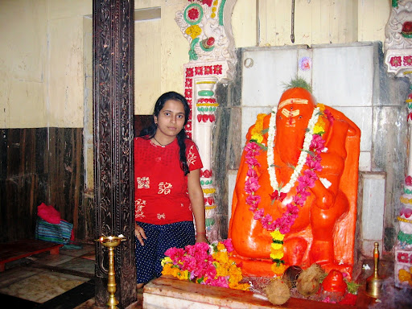
Most Popular Kadav Ganesh Temple.
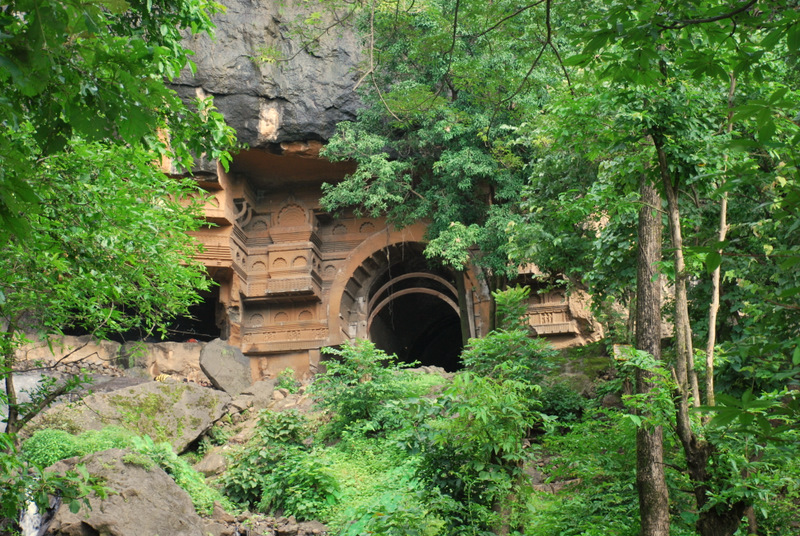
Kondhana Caves.
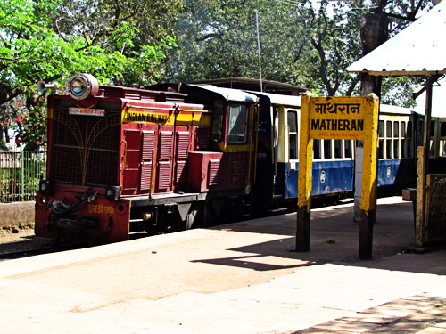
Hill Station Matheran.
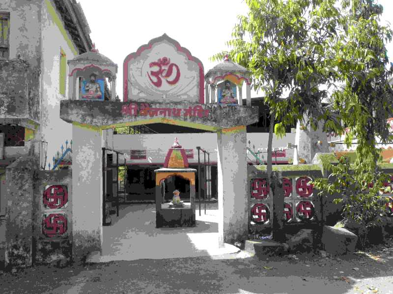
Vaijanath Lord Shiva Temple.
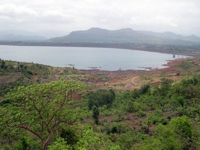
Pali Bhutivali Water Dam.
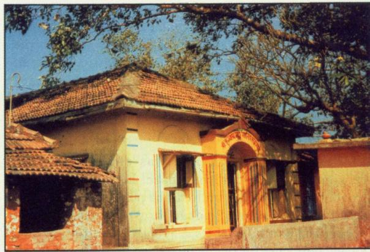
Lord Saibaba Temple.
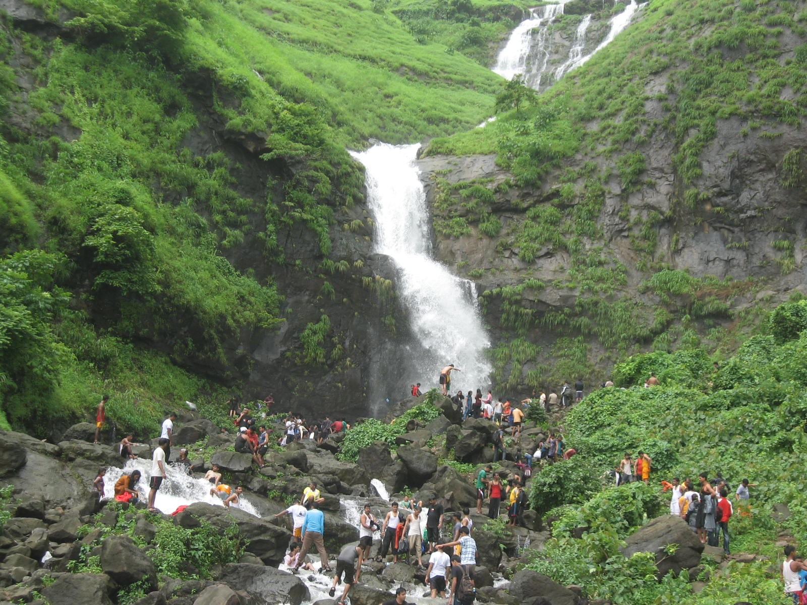
Waterfalls near Neral.
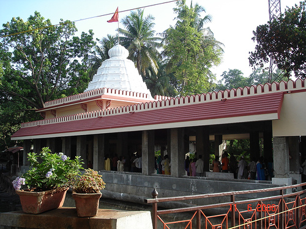
Palasdhari Math.  PETH Fort.  Pandav Times Vanvihar Caves(Kothimbe).  Tata Power Company.
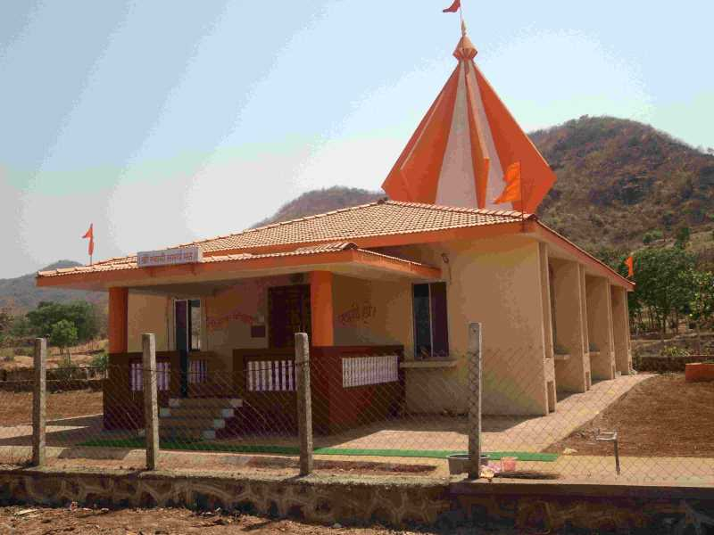
Swami Samartha Math. |
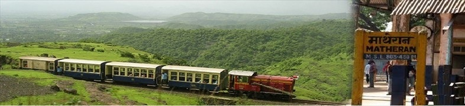
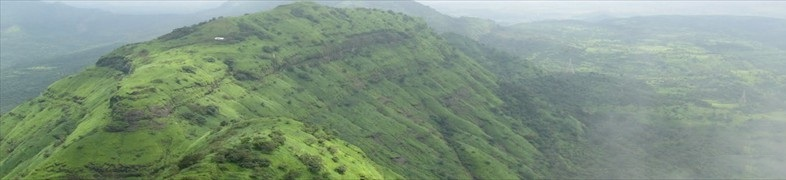
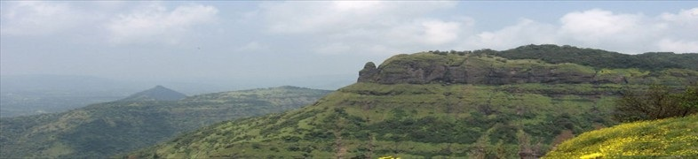
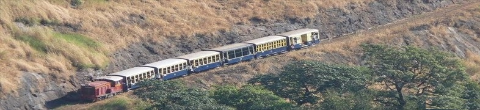
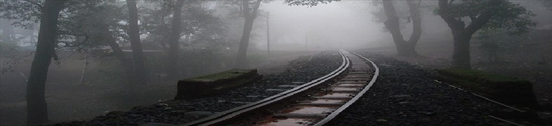